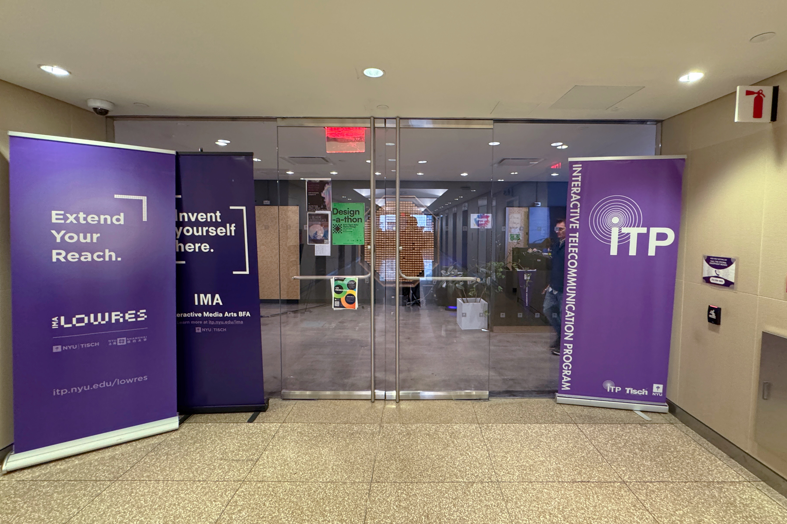
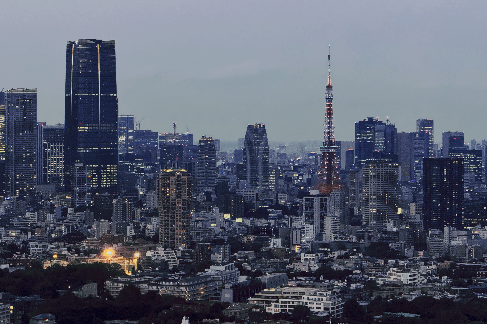
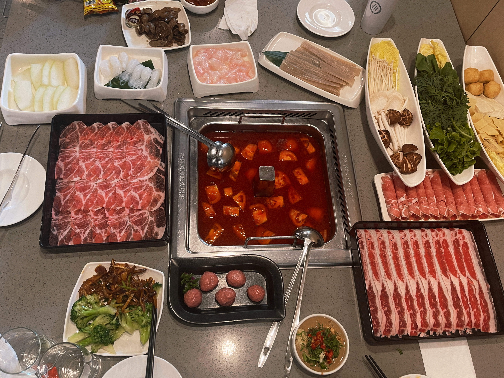
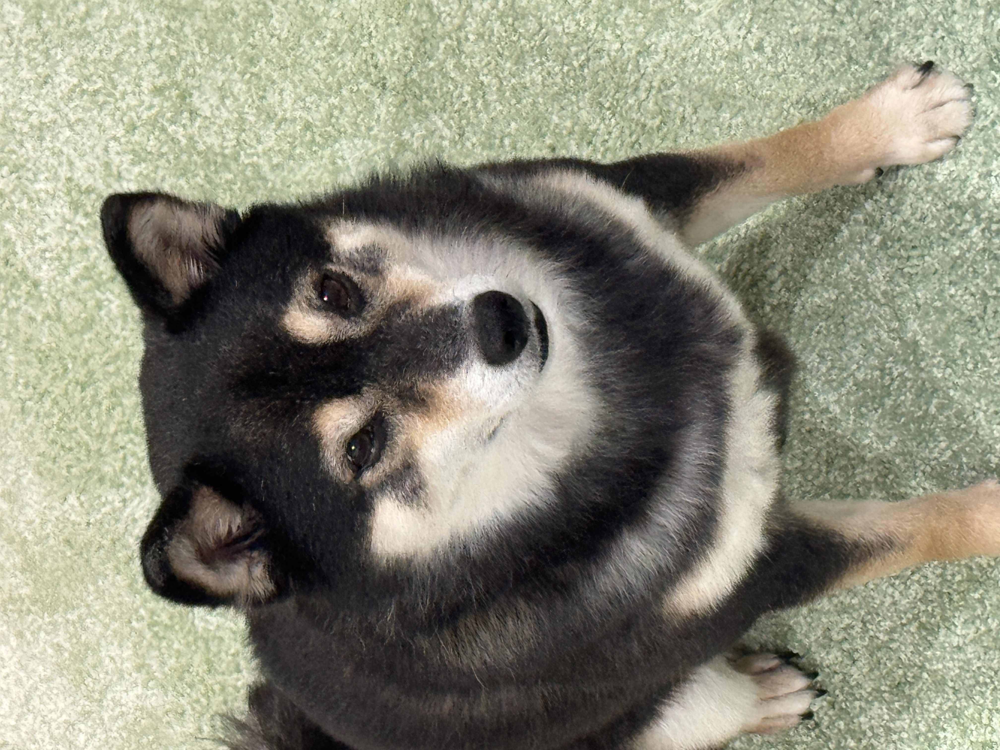
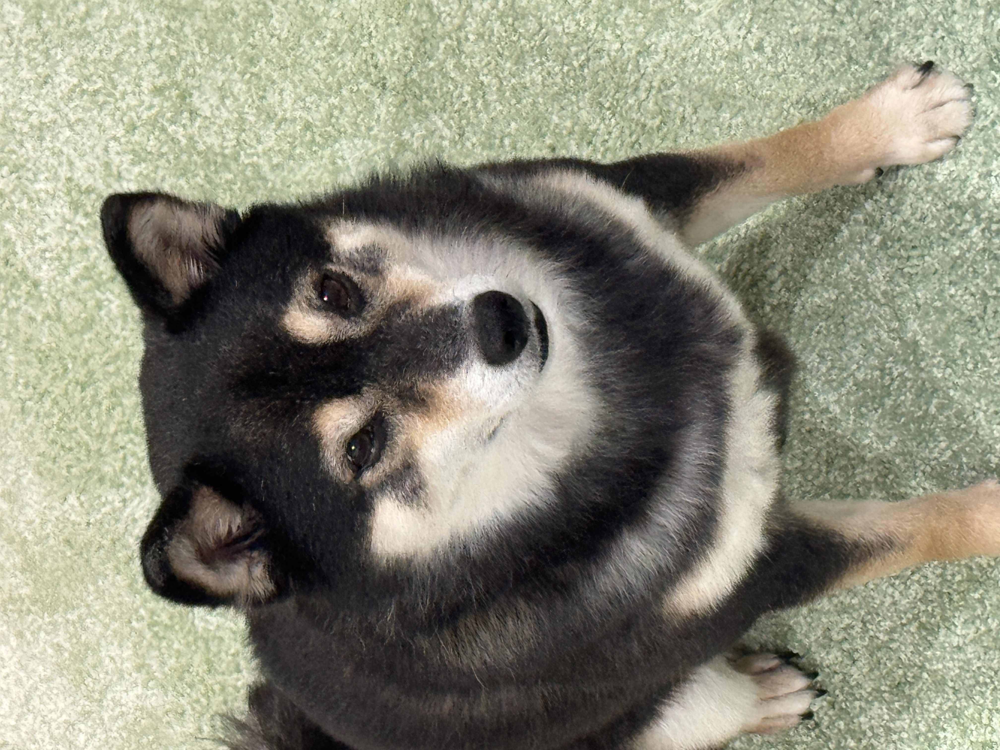

Some Basic Info
Who am I?
Hi👋! This is Jindi Chai.
Where am I from?
I was born in Shenyang, China, and now I live in NYC.

What am I studing?
I am a senior student at NYU Tisch IMA and want to learn knowledge about web, media and design.
Self Portrait
What is the story of your name?
My name comes from the phrase “巾帼英雄天下无敌” (a heroine unmatched in the world), and my parents chose the first and the last characters, Jin and Di, as a reminder of strength and courage.
What is a plant that represents you?
I would choose the peach blossom, because when I was a child, they always bloomed around my birthday. To me, they represent warmth, growth, and a sense of home.

What are two of your hobbies? Describe what you like about them.
One of my hobbies is traveling, which I love because it allows me to experience different places and cultures firsthand.

Another is playing video games🎮, which I enjoy because it helps me relax and also inspires my creativity through interactive storytelling.
What are you excited to learn about the world?
I'm excited to explore how I can use design, media and technology to express myself, understand the world better, and create projects that help others.
What is your favorite song?
My favorite song is “Wayfarer (山海)” by No Party For Cao Dong, because it feels emotional, powerful, and very close to my own inner thoughts.
What is your favorite food?
My favorite food is hot pot, because I love the communal aspect of sharing a meal with friends and family, and the variety of ingredients and flavors that can be enjoyed together.
Something Unexpected
Something unexpected is that I have a dog🐕 named Guiyuan (which means “longan fruit”). She's playful, and always brings joy into my daily life.
 

Another fun fact is that I take the train every day to commute, which gives me time to observe people, think, or just enjoy some quiet moments.